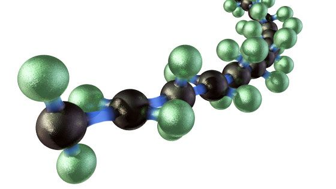

Plastics are everywhere in our daily life. It’s all over the place that many people can’t even imagine what life is like living without plastic? Because living without it means you won’t be able to get your ice cold Starbucks frappe every morning! Now
as yummy as frappe are, they aren’t the most important conversation now. The real one is how much of our everyday items contain plastics because after all plastics took over most part of our life! Although to understand why here is some
background knowledge about plastic and how it’s created.

Plastic are typically made of polymer. A polymer is a substance that made out of long and repeating chain of units. In general, there are many types of polymers. Basically, any word starting with “poly” means that are a type of polymer as well as the
main ingredient to many plastics produced. Examples of polymer are polyethylene, polystyrene, and polypropylene which are some of the most common plastics.
Tires
Plastic is everywhere whether you live in an urban area like NYC or a suburban area like Wisconsin. Now, what these places have in common is their transportation systems such as cars and buses. This is because the tires
are made out of plastic or polymer according to the U.S. tire manufacturer association. Tires are made out of at least 8 layer including body polymer, bead, belts, inner liner, sidewall, and tread. These synthetic polymers are used in
combination with rubber. The physical and chemical properties help with the tires resistance, wear and traction and helped make inner liner become more impermeable, preventing it from inflation. On the road, tires may abrase an amount
of microplastics into the air. There are chances that people may breathe it in or washed out by rain and into the ocean. The statistic has shown that the population of using a car increase from 167 million in 1990 to 222 million in 2016.
This increase in demands of cars demonstrates how much the world is consuming plastic greatly affecting our daily life.
Gum
Another thing many people might not know is also made with plastic is gum. YES THE GUM WE CHEW. Earlier in the history, people chew on chicle which is a form of milky latex from sapodilla tree that were a natural gum for people
back then. Nowaday, people more likely to be chewing on more than just chicle. Sometimes people aren’t aware of the nutrition label placed on the gum packaging or never read the nutrition facts. When you see “gum base”as one of the ingredients
on some gum packaging label, it means that it contains polyethylene/polymer and that is a type of plastic. This “gum base” isn’t a specific material and it’s broadly classified making it hard for consumers to understand what it is. This
is why no matter how long you chew the gum for, it will not break down. Even if you swallowed the gum, it cannot digest but it will excrete as waste. Study have shown that chewing gum can help reduce stress. Though they provide a satisfying
chewing process they are made of plastic that is also being used to made plastic that we regularly used.
Soap
Do you know that the soap that you used also contain plastic? Many soap contain microbeads which is made out of plastic. Microbeads are made out of synthetic polymer that may include polyethylene, polylactic acid (PLA), polypropylene,
polystyrene, or polyethylene terephthalate. Therefore, whenever you see one of those polymers on the ingredient label of a care product, it may include microbeads that are made of polymer, simply plastic. Microbeads often can be found
in facial care products like face scrub. They are mainly used to help people exfoliate. However, once the product is being rinsed, it can be assumed that it flushed down the stream and into the ocean. However, they may also exist in other
care products such as makeup. Essentially, microbeads has the function to not just exfoliate but also help clean out dead skin cells and clogged pores which can result in a smoother and clean skin for people.
Commonly, you see plastic being used a lot in grocery store for the purpose of light-weighted and the protection from contamination. But shockingly, they are used in most of our transportation that we ride on to get to the stores to purchase for a product
that may also contain plastics like face wash or our most favorite candy, gum. As a result, small particles of plastic may be produced and end up in the air we breathe or the ocean.